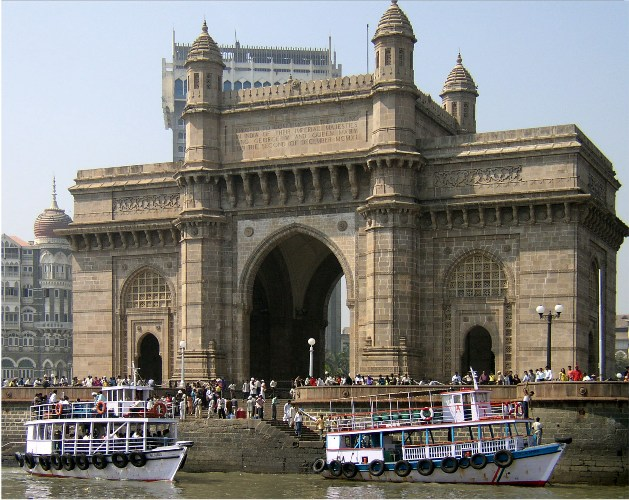
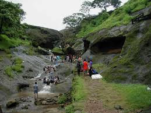
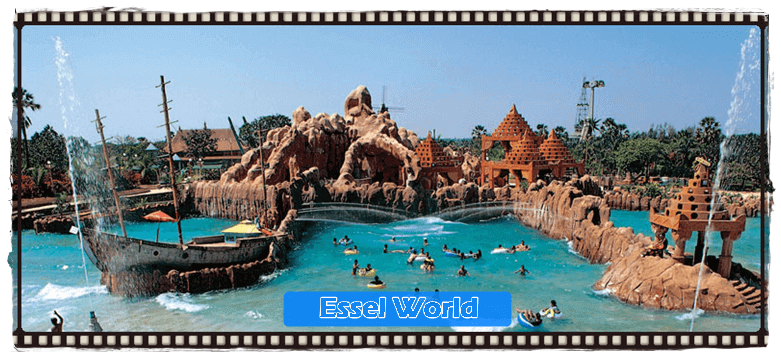
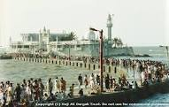

| VISITING PLACES |
| Name |
Origin |
Photo |
| GATEWAY OF INDIA
| MUMBAI (MAHARASTHRA)
|  |
| The Gateway of India is a monument built during the 20th century in Mumbai City of Maharashtra state in Western India.[2] It is located on the waterfront in the Apollo Bunder area in South Mumbai and overlooks the Arabian Sea.The structure is a basalt arch, 26 metres (85 feet) high. |
4 December 1994. |
Place 1 |
| ELEPHANTA CAVES
| MUMBAI (MAHARASTHRA)
|  |
| The rock cut architecture of the caves has been dated to between the 5th and 8th centuries, although the identity of the original builders is still a subject of debate. The caves are hewn from solid basalt rock. All the caves were also originally painted in the past, but now only traces remain |
Inscription 1987. |
Place 2 |
| GIRGAUM CHOwPATTY
| MUMBAI (MAHARASTHRA)
|  |
| chowpatty beach is one of the most famous beach in mumbai.located in the heart of the city .this beach is most popular for its local delicacies which most people enjoy whenever they visit chowpatty beach. most people visit this beach to relax after a long tiring day. |
Since 19th century |
Place 3 |
| SANJAY GANDHI NATIONAL PARK
| MUMBAI (MAHARASTHRA)
|  |
| Sanjay gandhi national park is said to be one of the most visited national parks in asia.the national park is also paradise fr morning walk lovers .every morning thousands of people ,elderly,yoth,children visit the park to get a breath of fresh air. |
Since 1969 |
Place 4 |
| ESSEL WORLD
| MUMBAI (MAHARASTHRA)
|  |
| For nine decades Essel group has benn a leading buisness havinh diverse buisness presence across media,entertaiment ,packaging,n infrastructure., education ,previous metals and technology secthe park is own by PAN INIDIA PARYATAN pvt ltd. |
Since 1989 |
Place 5 |
| AAJI ALI DARGAH
| MUMBAI (MAHARASTHRA)
|  |
| The Haji Ali Dargah was constructed in 1431[4] in memory of a wealthy Muslim merchant, Sayyed Peer Haji Ali Shah Bukhari, who gave up all his worldly possessions before making a pilgrimage to Mecca. Hailing from Bukhara, in present-day Uzbekistan, Bukhari travelled around the world in the early to mid 15th century. |
Since 1735 |
Place 6 |
| SIIDHI VINAYAK TEMPLE
| MUMBAI (MAHARASTHRA)
|  |
| The Shree Siddhivinayak Ganapati Mandir is a Hindu temple dedicated to Lord Shri Ganesh.The temple has a small mandap with the shrine for Siddhi Vinayak ("Ganesha who grants your wish"). The wooden doors to the sanctum are carved with images of the Ashtavinayak (the eight manifestations of Ganesha in Maharashtra). |
19 november 1801 |
Place 7 |
| WANKHEDE STADIUM
| MUMBAI (MAHARASTHRA)
|  |
| The Wankhede stadium has been host to numerous high-profile cricket matches in the past, most notable being the 2011 Cricket World Cup Final, in which India defeated Sri Lanka by 6 wickets. The stadium witnessed the last match of Sachin Tendulkar's international career. Additionally, it has hosted many other matches in both the 1996 as well as 2011 Cricket World Cup. |
Since 11974 |
Place 8 |
| CHHATRAPATI SHIVAJI TERMINUS
| MUMBAI (MAHARASTHRA)
|  |
| the chhatrapati shivaji terminus also nown as victoria terminus station in mumbai,is an outstanding example of victorian gothic revival architecture in india.
it is an outstanding example of the meeting two cultures the india and the british culture. |
Since May1988 |
Place 9 |